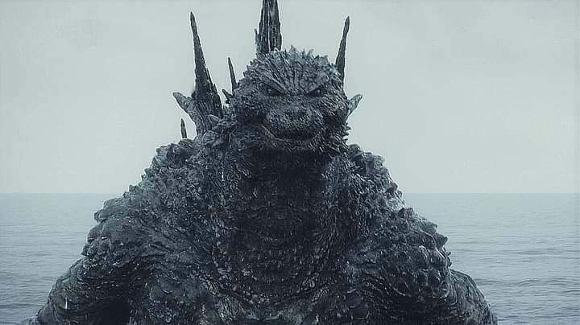

Godzilla Minus One
Un film de monstre qui parle du cœur humain.

Le film, en vrai
- RéalisateurTakashi Yamazaki
- AvecRyunosuke Kamiki, Minami Hamabe
- GenreKaijū, drame historique
- Sortie, Japon
- ÉpoqueJapon, 1945 à 1947
- Oscar 2024Meilleurs effets visuels, une première pour un film japonais
Après la guerre, le Japon est à zéro. Puis Godzilla arrive, et le fait tomber à moins un.


Ginza, 1947. Il sort du cadre.
L’histoire, sans la fin
Spoilers légers
-
 1945
1945L’île d’Odo
Kōichi, pilote kamikaze qui a fui sa mission, se pose sur une île. Quelque chose sort de la nuit.
-
1947
Tokyo en ruines
Rongé par la honte, il forme une famille de hasard avec Noriko et un bébé orphelin.
-
 1947
1947La menace
Devenu immense, Godzilla fonce sur Tokyo. Pas d’armée. Juste d’anciens soldats et un plan désespéré.
-
?
Des hommes brisés peuvent-ils se relever une dernière fois ?
La fin, tu la découvres toi-même.
Mon avis, en quatre cartes
Touche une carte pour la retourner.
Le verdict
4,5/5
★★★★★★★★★★
À voir au moins une fois. Sur le plus grand écran possible.
À toi de jouer
Ton film de monstre préféré ?